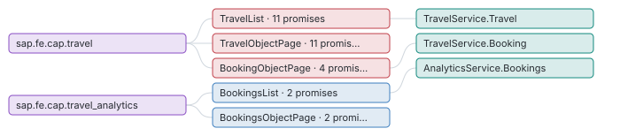

Screen map
UI5 and Fiori annotations · Apps, pages and the entities they show, and every UI promise with the server verdict (does the backend enforce what the UI shows?).
2 apps · 5 pages · 21 UI promises, 7 only in the UI (an OData client can bypass them).
How many UI promises does the server not enforce?
A field the UI hides or locks but the server accepts can be changed by any OData client: the UI is not a security boundary. Next: Fix the red ones on the server (@readonly, @mandatory, a before handler, a restriction).

Which page shows which entity, and where are the UI-only promises?
A UI-only promise matters most on a page users actually use; this connects the verdict to a screen. Next: Open the page, then its promises below.

| App | Page | Entity | Worst verdict | Promises | UI only |
|---|---|---|---|---|---|
| sap.fe.cap.travel | TravelList | TravelService.Travel | ui-only | 11 | 3 |
| sap.fe.cap.travel | TravelObjectPage | TravelService.Travel | ui-only | 11 | 3 |
| sap.fe.cap.travel | BookingObjectPage | TravelService.Booking | ui-only | 4 | 3 |
| sap.fe.cap.travel_analytics | BookingsList | AnalyticsService.Bookings | framework | 2 | 0 |
| sap.fe.cap.travel_analytics | BookingsObjectPage | AnalyticsService.Bookings | framework | 2 | 0 |
5 pages · browse with filters · screens.json
What exactly does each UI promise say, and what does the server do?
To fix or test a promise you need the field, the UI rule and the server behaviour side by side. Next: Turn each UI-only promise into a server rule or a test that pins today's behaviour.
| Entity | Promise | UI says | Server | Verdict | Where |
|---|---|---|---|---|---|
| Travel | rejectTravel | TravelStatus != X | no rule on this field | ui-only | app/travel_processor/field-control.cds:37 |
| Travel | acceptTravel | TravelStatus != A | no rule on this field | ui-only | app/travel_processor/field-control.cds:41 |
| Travel | field-control | 5 fields controlled by TravelStatus.fieldControl | no update handler checks it | ui-only | app/travel_processor/field-control.cds:29 |
| Booking | field-control | 6 fields controlled by to_Travel.TravelStatus.fieldControl | no update handler checks it | ui-only | app/travel_processor/field-control.cds:65 |
| Booking | CreateHidden | hidden when [object Object] | no before CREATE/NEW rejection | ui-only | app/travel_processor/field-control.cds:60 |
| Booking | DeleteHidden | hidden when [object Object] | no before DELETE rejection | ui-only | app/travel_processor/field-control.cds:61 |
| BookingSupplement | field-control | 4 fields controlled by to_Travel.TravelStatus.fieldControl | no update handler checks it | ui-only | app/travel_processor/field-control.cds:29 |
| Travel | deductDiscount | TravelStatus = O | allows TravelStatus in {X, O}; also X | partial | app/travel_processor/field-control.cds:45 |
| Travel | side-effects | BookingFee → re-read TotalPrice, GreenFee, TreesPlanted | recomputed by 3 handler(s) | consistent | app/travel_processor/field-control.cds:20 |
| Travel | side-effects | GoGreen → re-read TotalPrice, GreenFee, TreesPlanted | recomputed by 3 handler(s) | consistent | app/travel_processor/field-control.cds:20 |
Top 10 of 21 promises by severity. Browse all 21 with filters · promises.json
Deeper: browse.html · ui-promises.json
Read from: run/graph/ (UI5App, Route, UiRule) · all products